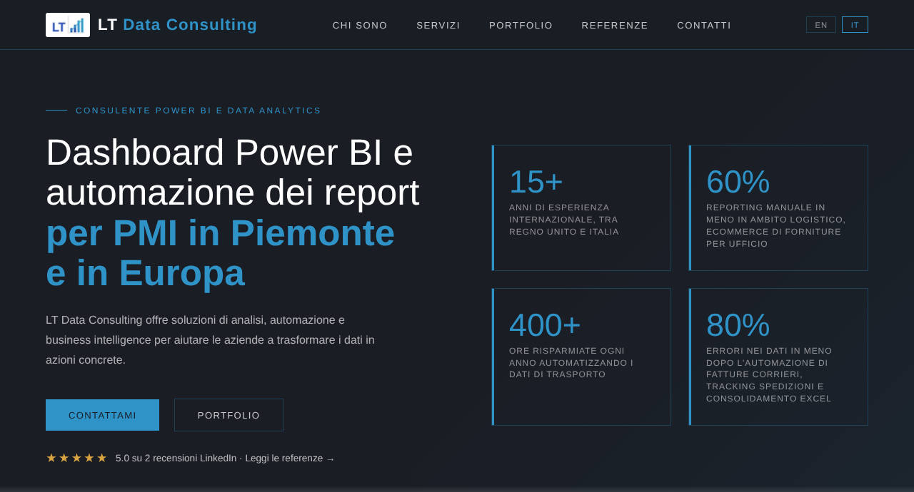
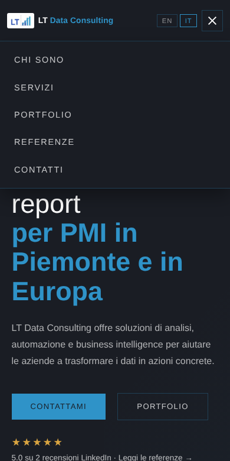

Il problema
LT Data Consulting è partita con una sola pagina che passava dall'inglese all'italiano nel browser. Google vedeva un'unica pagina, quindi nei risultati comparivano un titolo in italiano e una descrizione in inglese, e tutti i progetti stavano in un lungo elenco senza una pagina propria.
Al sito servivano anche prove concrete per i potenziali clienti (case study, referenze) e un modo per capire se qualcuno lo trovava davvero sui motori di ricerca.
La soluzione
Quattro fasi, ognuna verificata su quello che Google e Bing riportano davvero:
StrutturaUna pagina separata per ogni lingua e ogni progetto, collegate con i tag hreflang
ContenutiUndici case study in due lingue, con i dati dei clienti rimossi da ogni immagine
Motori di ricercaSitemap, robots.txt, dati strutturati dell'attività e meta description entro i limiti
MisuraSearch Console e Bing Webmaster Tools, più una dashboard Looker Studio
Cosa comprende la soluzione
24 pagineDue home page e undici case study, ciascuno in italiano e inglese
Cambio linguaCambiando lingua il lettore resta sullo stesso paragrafo
Pensato per il mobileMenu a scomparsa, pulsante per tornare su e layout provati su smartphone
Dati strutturatiNome, logo, P.IVA, telefono e profilo LinkedIn leggibili da Google
Dashboard ricercheClic, impressioni e posizione per lingua, tipo di pagina e ricerche con o senza il nome
Account del titolareDominio, codice e account di ricerca intestati al titolare; nessuna password condivisa


Risultati
- Ogni lingua ha il suo risultato di ricerca, con titolo e descrizione nella stessa lingua
- Tutte le pagine inviate con la sitemap a Google Search Console e Bing Webmaster Tools, e indicizzate
- Ogni progetto ha una pagina propria da linkare su LinkedIn, in una email o in una proposta
- Una dashboard aggiornata mostra quali ricerche portano visite e su quali pagine arrivano
- Lo stesso servizio ora è offerto ai clienti, con tutti gli account a loro nome
Stack
HTML
CSS
JavaScript
GitHub Pages
Search Console
Bing Webmaster
Looker Studio
Questo è il mio sito, quindi in questa pagina non ci sono dati di clienti. Le immagini mostrano il sito online.